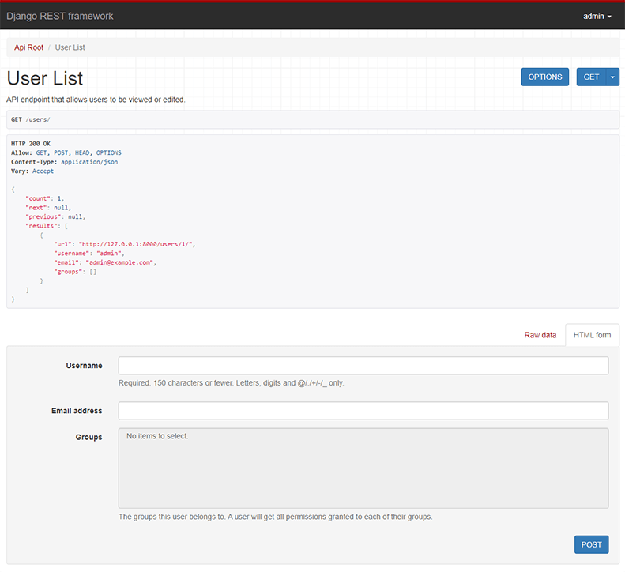

Início Rápido (Quickstart)¶
Olá Pythônicos e Pythônicas! Se vocês estão aqui é porque querem aprender a criar APIs com Django REST framework, certo? Então, preparem-se!
Este se trata de um guia simples, mas completo, de como criar uma API com Django REST framework traduzido pela comunidade Python Pará, fiquem à vontade para contribuir com as traduções.
O guia quickstart oficial pode ser consultado via Documentação oficial do Django REST framework
Vamos criar uma API simples para permitir que usuários administradores visualizem e editem os usuários e grupos do sistema.
Configuração do projeto ( hands-on )¶
Crie um novo projeto Django chamado tutorial, e em seguida inicie um novo app chamado quickstart.
# Cria o diretório do projeto
mkdir tutorial
cd tutorial
# Cria um ambiente virtual para isolar as dependências do pacote localmente
python3 -m venv .venv
source .venv/bin/activate
# Instala o Django e o Django REST framework no ambiente virtual
pip install djangorestframework
# Configura um novo projeto com uma única aplicação
django-admin startproject tutorial . # Note o caractere '.' no final
cd tutorial
django-admin startapp quickstart
cd ..
Se você usa o Bash no Windows:
# Cria o diretório do projeto
mkdir tutorial
cd tutorial
# Cria um ambiente virtual para isolar as dependências do pacote localmente
python3 -m venv .venv
source .venv\Scripts\activate
# Instala o Django e o Django REST framework no ambiente virtual
pip install djangorestframework
# Configura um novo projeto com uma única aplicação
django-admin startproject tutorial . # Note o caractere '.' no final
cd tutorial
django-admin startapp quickstart
cd ..
A estrutura do projeto deve ficar parecida com:
$ pwd
<some path>/tutorial
$ find .
.
./tutorial
./tutorial/asgi.py
./tutorial/__init__.py
./tutorial/quickstart
./tutorial/quickstart/migrations
./tutorial/quickstart/migrations/__init__.py
./tutorial/quickstart/models.py
./tutorial/quickstart/__init__.py
./tutorial/quickstart/apps.py
./tutorial/quickstart/admin.py
./tutorial/quickstart/tests.py
./tutorial/quickstart/views.py
./tutorial/settings.py
./tutorial/urls.py
./tutorial/wsgi.py
./env
./env/...
./manage.py
Pode parecer incomum que a aplicação tenha sido criada dentro do diretório do projeto. Usar o namespace do projeto evita conflitos de nomes com módulos externos (um assunto que vai além do escopo deste início rápido).
Agora sincronize o banco de dados pela primeira vez:
python manage.py migrate
Também vamos criar um usuário inicial chamado admin com uma senha. Faremos a autenticação com esse usuário mais adiante em nosso exemplo.
python manage.py createsuperuser --username admin --email admin@example.com
Assim que você configurar o banco de dados e o usuário inicial estiver criado e pronto, abra o diretório da aplicação e vamos começar a programar...
Serializadores (Serializers)¶
Primeiro, vamos definir alguns serializadores. Vamos criar um novo módulo chamado tutorial/quickstart/serializers.py que usaremos para nossas representações de dados.
from django.contrib.auth.models import Group, User
from rest_framework import serializers
class UserSerializer(serializers.HyperlinkedModelSerializer):
class Meta:
model = User
fields = ["url", "username", "email", "groups"]
class GroupSerializer(serializers.HyperlinkedModelSerializer):
class Meta:
model = Group
fields = ["url", "name"]
Observe que, neste caso, estamos usando relações hiperlinkadas com HyperlinkedModelSerializer. Você também pode usar chave primária (primary key) e vários outros relacionamentos, mas o uso de hiperlinks é uma boa prática de design RESTful.
Views (Visualizações)¶
Certo, agora precisamos escrever algumas views. Abra tutorial/quickstart/views.py e vamos ao código:
from django.contrib.auth.models import Group, User
from rest_framework import permissions, viewsets
from tutorial.quickstart.serializers import GroupSerializer, UserSerializer
class UserViewSet(viewsets.ModelViewSet):
"""
Endpoint da API que permite visualizar ou editar usuários.
"""
queryset = User.objects.all().order_by("-date_joined")
serializer_class = UserSerializer
permission_classes = [permissions.IsAuthenticated]
class GroupViewSet(viewsets.ModelViewSet):
"""
Endpoint da API que permite visualizar ou editar grupos.
"""
queryset = Group.objects.all().order_by("name")
serializer_class = GroupSerializer
permission_classes = [permissions.IsAuthenticated]
Em vez de escrever múltiplas views, agrupamos todo o comportamento comum em classes chamadas ViewSets.
Podemos facilmente separá-las em views individuais se necessário, mas usar viewsets mantém a lógica da view bem organizada, além de muito concisa.
URLs¶
Beleza, agora vamos configurar as URLs da API. Vamos para tutorial/urls.py...
from django.urls import include, path
from rest_framework import routers
from tutorial.quickstart import views
router = routers.DefaultRouter()
router.register(r"users", views.UserViewSet)
router.register(r"groups", views.GroupViewSet)
# Configura a nossa API usando roteamento automático de URLs.
# Adicionalmente, incluímos URLs de login para a API navegável (browsable API).
urlpatterns = [
path("", include(router.urls)),
path("api-auth/", include("rest_framework.urls", namespace="rest_framework")),
]
Como estamos usando viewsets em vez de views, podemos gerar automaticamente a configuração de URLs da nossa API, simplesmente registrando os viewsets em uma classe router.
Novamente, se precisarmos de mais controle sobre as URLs da API, podemos simplesmente voltar a usar views convencionais baseadas em classes (class-based views) e escrever as configurações de URL explicitamente.
Por fim, estamos incluindo as views padrão de login e logout para uso com a API navegável. Isso é opcional, mas útil se a sua API exigir autenticação e você quiser usar a API navegável.
Paginação (Pagination)¶
A paginação permite controlar quantos objetos são retornados por página. Para ativá-la, adicione as seguintes linhas em tutorial/settings.py:
REST_FRAMEWORK = {
"DEFAULT_PAGINATION_CLASS": "rest_framework.pagination.PageNumberPagination",
"PAGE_SIZE": 10,
}
Configurações (Settings)¶
Adicione 'rest_framework' em INSTALLED_APPS. O módulo de configurações fica em tutorial/settings.py:
INSTALLED_APPS = [
...
'rest_framework',
]
Pronto, finalizamos a configuração.
Testando nossa API¶
Agora estamos prontos para testar a API que construímos. Vamos iniciar o servidor pela linha de comando:
python manage.py runserver
Podemos acessar a nossa API tanto pela linha de comando, usando ferramentas como o curl...
bash: curl -u admin -H 'Accept: application/json; indent=4' http://127.0.0.1:8000/users/
Enter host password for user 'admin':
{
"count": 1,
"next": null,
"previous": null,
"results": [
{
"url": "http://127.0.0.1:8000/users/1/",
"username": "admin",
"email": "admin@example.com",
"groups": []
}
]
}
Ou usando a ferramenta de linha de comando httpie...
bash: http -a admin http://127.0.0.1:8000/users/
http: password for admin@127.0.0.1:8000::
$HTTP/1.1 200 OK
...
{
"count": 1,
"next": null,
"previous": null,
"results": [
{
"email": "admin@example.com",
"groups": [],
"url": "http://127.0.0.1:8000/users/1/",
"username": "admin"
}
]
}
Ou diretamente pelo navegador, acessando a URL http://127.0.0.1:8000/users/...

Se você estiver testando pelo navegador, lembre-se de fazer login usando o controle no canto superior direito.
Ótimo, foi fácil!
Se você quiser entender mais a fundo como as partes do REST framework funcionam juntas, dê uma olhada no tutorial completo ou explore o guia da API.